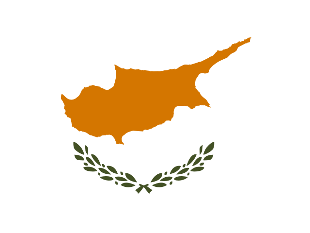

Countries › Asia
Cyprus
Size, sea and borders
Different definitions: Land borders (kilometres (km)) from Central Intelligence Agency (CIA) World Factbook 2024 counts boundaries with non-sovereign territories, whereas Number of land borders from GeoNames counts sovereign neighbours only.
9,240 square kilometres (km²)162nd of 195
Sea area it controlsMarine Regions, World Exclusive Economic Zone (EEZ) version 12, 2023 · doi.org
98,450 km²102nd of 191
648 km84th of 193
Coastline for its sizeCIA World Factbook and World Bank (derived), 2024 · web.archive.org (cia.gov)
70,130 metres (m) per 1,000 km²37th of 192
156 km148th of 193
Number of land bordersGeoNames, 2026-08 · download.geonames.org
0158th of 195, tied with 37
Time-zone regionsInternet Assigned Numbers Authority (IANA) Time Zone Database 2026a, 2026 · raw.githubusercontent.com
215th of 195, tied with 13
Height and water
1,951 m120th of 194
Average elevationCIA World Factbook, 2024 edition, 2024 · web.archive.org (cia.gov)
91 m146th of 161
How much of the country is mountainsFood and Agriculture Organization statistical database (FAOSTAT), 2021 · bulks-faostat.fao.org
33.5%70th of 162
Biggest area of mountainsFAOSTAT, 2021 · bulks-faostat.fao.org
3,099 km²134th of 162
Farthest you can get from the seaNatural Earth (derived), 2026 · github.com
33.3 km164th of 192
How far the capital is from the seaGeoNames and Natural Earth (derived), 2026 · github.com
18.6 km105th of 192
No dataNot ranked
Rainfall a yearFood and Agriculture Organization (FAO), via World Bank, WDI, 2022 · data.worldbank.org
498 millimetres (mm)142nd of 179
Its own fresh waterFood and Agriculture Organization water database (AQUASTAT), via World Bank, WDI, 2021 · data.worldbank.org
0.78 cubic kilometres (km³)159th of 182
Fresh water per personAQUASTAT, via World Bank, WDI, 2022 · data.worldbank.org
586 cubic metres (m³)150th of 180
Fresh water taken outAQUASTAT, via World Bank, WDI, 2022 · data.worldbank.org
0.22 km³143rd of 178, tied with 1
Fresh water already used upAQUASTAT, via World Bank, WDI, 2022 · data.worldbank.org
30.5%52nd of 175
Water going to farmingAQUASTAT, via World Bank, WDI, 2022 · data.worldbank.org
61.2%88th of 177
Industry's share of water useAQUASTAT, via World Bank, WDI, 2022 · data.worldbank.org
No dataNot ranked
Land, forest and farming
18.7% of land124th of 192
1,725 km²154th of 192
Old-growth forestFAOSTAT, 2025 · bulks-faostat.fao.org
No dataNot ranked
Forest planted by peopleFAO Global Forest Resources Assessment 2025, 2020 · bulks-faostat.fao.org
329 km²127th of 170
174 km²122nd of 136
Mangrove forestEuropean Space Agency (ESA) WorldCover 2021, via FAOSTAT, 2021 · bulks-faostat.fao.org
No dataNot ranked
Open grass and tundraESA WorldCover 2021, via FAOSTAT, 2021 · bulks-faostat.fao.org
34.3% of the country31st of 194
Marsh and flooded grasslandESA WorldCover 2021, via FAOSTAT, 2021 · bulks-faostat.fao.org
3.8 km²159th of 186
Desert and bare rockESA WorldCover 2021, via FAOSTAT, 2021 · bulks-faostat.fao.org
1.6% of land73rd of 194
1.8%34th of 194
Agricultural landFAO, via World Bank, WDI, 2023 · data.worldbank.org
13.5% of land158th of 189
10.4% of land97th of 190
Farmland per personFAO, via World Bank, WDI, 2023 · data.worldbank.org
0.071 hectares134th of 190
Orchards and plantationsFAO, via World Bank, WDI, 2023 · data.worldbank.org
2.9% of land65th of 189
Land used for grazingFAOSTAT, 2023 · bulks-faostat.fao.org
0.2%177th of 181
People and cities
1,344,976 people154th of 195
Population densityWorld Bank, WDI, 2023 · data.worldbank.org
146 people per km²64th of 192
Population growthUnited Nations (UN) World Population Prospects 2024, via World Bank, WDI, 2023 · data.worldbank.org
1.0% a year105th of 194
How many times bigger than in 1950UN World Population Prospects 2024, 2023 · population.un.org
2.7127th of 194
37.8 years51st of 195
81.6 years32nd of 195
Years longer women live than menUN World Population Prospects 2024, 2023 · population.un.org
4.0141st of 195, tied with 1
Fertility rateWorld Bank, WDI, 2023 · data.worldbank.org
1.4 children per woman165th of 194
10.4 per 1,000 people152nd of 193, tied with 1
7 per 1,000 people103rd of 193, tied with 1
Births per 1,000 girls 15-19UN World Population Prospects 2024, via World Bank, WDI, 2023 · data.worldbank.org
7.0153rd of 194
Average age at childbirthUN World Population Prospects 2024, 2023 · population.un.org
31.7 years17th of 195
Under-5 mortalityUnited Nations Inter-agency Group for Child Mortality Estimation (UN IGME), via World Bank, WDI, 2024 · data.worldbank.org
5 per 1,000 births155th of 193
Dependants per 100 people 15-64UN World Population Prospects 2024, via World Bank, WDI, 2023 · data.worldbank.org
43.6169th of 194
Share who are womenUN World Population Prospects 2024, via World Bank, WDI, 2023 · data.worldbank.org
49.6%148th of 194
People living in one homeUnited Nations Department of Economic and Social Affairs (UN DESA) Household Size and Composition, 2022 · un.org
2.8118th of 152
Average adult's years of schoolUnited Nations Development Programme (UNDP) Human Development Report 2025, 2023 · hdr.undp.org
12.631st of 192
Urban populationWorld Bank, WDI, 2023 · data.worldbank.org
66.7%84th of 195
Cities growingUN DESA World Urbanization Prospects 2025, via World Bank, WDI, 2023 · data.worldbank.org
1.0% a year122nd of 194
Capital populationUN DESA World Urbanization Prospects 2025, 2025 · population.un.org
333,008140th of 192
333,008 people151st of 175
Share living in the biggest cityUN DESA World Urbanization Prospects 2025 and World Bank (derived), 2025 · population.un.org
24.8%48th of 175
People born abroadUN DESA International Migrant Stock 2024, 2020 · data.worldbank.org
190,366112th of 194
Share of people born abroadUN DESA International Migrant Stock 2024, 2020 · un.org
14.6%40th of 194
People living abroadUN DESA International Migrant Stock 2024, 2020 · un.org
75,728151st of 195
Share of its people living abroadUN DESA International Migrant Stock 2024, 2020 · un.org
5.8%93rd of 193
8,697 people50th of 194
Economy and work
Total gross domestic product (GDP)World Bank, WDI, 2023 · data.worldbank.org
35.1 billion United States dollars (US$)101st of 188
GDP per capitaWorld Bank, WDI, 2023 · data.worldbank.org
No dataNot ranked
3.6% a year77th of 188
How expensive the country isWorld Bank, International Comparison Program (ICP) 2021, 2021 · datacatalog.worldbank.org
107 world = 10029th of 176
A day's healthy foodWorld Bank Food Prices for Nutrition, 2024 · datacatalog.worldbank.org
4.08 dollars a person107th of 159
Adults with a bank accountWorld Bank Global Findex 2024, 2024 · data.worldbank.org
96.1%27th of 137
Natural resource incomeWorld Bank, WDI, 2021 · data.worldbank.org
0.01% of GDP165th of 183
Income from timberWorld Bank, WDI, 2021 · data.worldbank.org
< 0.001% of GDP163rd of 183
In work or lookingInternational Labour Organization (ILO), via World Bank, WDI, 2021 · data.worldbank.org
66.5%41st of 179
Share of workers who are womenILO, via World Bank, WDI, 2023 · data.worldbank.org
45.8%85th of 176
Unemployment rateILO, via World Bank, WDI, 2023 · data.worldbank.org
5.8%73rd of 176
Young people out of workILO, via World Bank, WDI, 2021 · data.worldbank.org
17.2%70th of 179
Working for themselvesILO, via World Bank, WDI, 2023 · data.worldbank.org
10.8%160th of 176
Working in farmingILO, via World Bank, WDI, 2021 · data.worldbank.org
2.9%152nd of 179
Working in industryILO, via World Bank, WDI, 2023 · data.worldbank.org
16.1%124th of 176
Farming and fishing
Cereal productionFAO, via World Bank, WDI, 2023 · data.worldbank.org
49,910 tonnes149th of 177
Grain per hectareFAO, via World Bank, WDI, 2023 · data.worldbank.org
2,030 kilograms (kg)116th of 176
Fertiliser per hectareFAO, via World Bank, WDI, 2023 · data.worldbank.org
172 kg46th of 184
31,100 tonnes91st of 122
No dataNot ranked
80,150 tonnes108th of 152
13,860 tonnes119th of 164
390,810 tonnes104th of 179
Chicken producedFAOSTAT, via Our World in Data, 2023 · ourworldindata.org
27,680 tonnes119th of 184
Wild fish caughtFAO, via World Bank, WDI, 2024 · data.worldbank.org
1,163 tonnes167th of 194
9,054 tonnes87th of 194
82,270151st of 183
Cattle per personFAOSTAT, 2023 · bulks-faostat.fao.org
0.061132nd of 183, tied with 1
309,76091st of 165
233,920106th of 176
5,00078th of 80, tied with 1
Sheep per personFAOSTAT, 2023 · bulks-faostat.fao.org
0.2653rd of 172
Horses per personFAOSTAT, 2023 · bulks-faostat.fao.org
No dataNot ranked
Food supply
Food supplied a dayFAO Food Balance Sheets, via Our World in Data, 2022 · ourworldindata.org
2,867 kilocalories103rd of 182
78.0 kg per person a year44th of 171
33.4 kg per person a year24th of 170
Poultry supplyFAO Food Balance Sheets, 2023 · bulks-faostat.fao.org
31.8 kg per person a year52nd of 171
Fish & seafood supplyFAO Food Balance Sheets, 2023 · bulks-faostat.fao.org
18.0 kg per person a year74th of 171, tied with 1
168 kg per person a year55th of 171
7.6 kg per person a year84th of 171
97 kg per person a year65th of 171
9.2 kg per person a year129th of 170
10.0 kg per person a year84th of 168
33.2 kg per person a year79th of 171
Vegetable supplyFAO Food Balance Sheets, 2023 · bulks-faostat.fao.org
96.5 kg per person a year91st of 171
77.8 kg per person a year99th of 171
2.6 kg per person a year66th of 171
66.3 kg per person a year28th of 171
29.1 kg per person a year79th of 170
Energy and emissions
Electricity accessWorld Bank / Energy Sector Management Assistance Program (ESMAP), via World Bank, WDI, 2023 · data.worldbank.org
100.0% of people1st of 194, tied with 106
Electricity generatedUnited States Energy Information Administration, 2024 · eia.gov
5,657 kilowatt-hours per person38th of 184
Electricity lost before billingUnited States Energy Information Administration, 2024 · eia.gov
3.1%180th of 186
Energy made at home per 100 usedUnited States Energy Information Administration, 2024 · eia.gov
4.7145th of 187
Electricity it generates from coalUnited States Energy Information Administration, 2024 · eia.gov
0%82nd of 185, tied with 103
Electricity it generates from natural gasUnited States Energy Information Administration, 2024 · eia.gov
0%116th of 185, tied with 69
Electricity it generates from nuclearUnited States Energy Information Administration, 2024 · eia.gov
0%32nd of 185, tied with 153
Electricity it generates from hydroUnited States Energy Information Administration, 2024 · eia.gov
0%149th of 185, tied with 36
Electricity it generates from windUnited States Energy Information Administration, 2024 · eia.gov
3.6%56th of 185
Solar panel capacity per personUnited States Energy Information Administration, 2024 · eia.gov
741 watts13th of 185
Crude oil pumpedUnited States Energy Information Administration, 2024 · eia.gov
0 thousand barrels a day98th of 186, tied with 88
Natural gas producedUnited States Energy Information Administration, 2024 · eia.gov
0 billion m³ a year96th of 187, tied with 91
Petrol sold per personUnited States Energy Information Administration, 2024 · eia.gov
471 litres a year20th of 185
Carbon dioxide (CO₂) per capitaGlobal Carbon Project, via Our World in Data, 2023 · ourworldindata.org
5.3 tonnes48th of 192
Transport
13142nd of 189, tied with 3
Highest airport you can fly toOurAirports, 2026 · davidmegginson.github.io
123 m128th of 187
13,027 km125th of 188
Road per 100 km² of landCIA World Factbook and World Bank (derived), 2024 · web.archive.org (cia.gov)
141 km32nd of 187
No dataNot ranked
Railway per 1,000 km² of landCIA World Factbook and World Bank (derived), 2024 · web.archive.org (cia.gov)
No dataNot ranked
No dataNot ranked
Ships registered under its flagCIA World Factbook, 2024 edition, 2024 · web.archive.org (cia.gov)
1,00522nd of 162
Football and chess
Football internationals played, all timeInternational football results (martj42), 2026 · github.com
42692nd of 193
Share of home football internationals wonInternational football results (martj42), 2026 · github.com
26.6%170th of 183
All-time football goal differenceInternational football results (martj42), 2026 · github.com
−552188th of 193
Different football opponents facedInternational football results (martj42), 2026 · github.com
64100th of 193, tied with 6
Years since its first football internationalInternational football results (martj42), 2026 · github.com
7787th of 193, tied with 6
Living chess grandmastersWikidata, 2026 · query.wikidata.org
271st of 194, tied with 2
Rank counts from the highest value among the countries that have data: 1st is the most. Ties share a rank. Data version 91, 22 November 2026.
Sort Cyprus against four others
The game has figures for Cyprus on 176 of its 190 questions.
The same game for Android and iOS. It launches on 10 December 2026.
Out now.